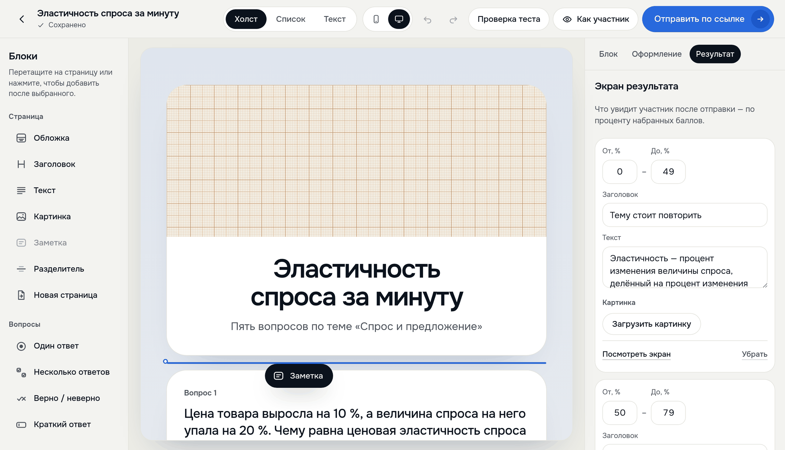

Представление блоков проекта
Преподаватель собирает тест в студии
как страницу: блоки, картинки, цвет, баллы
как страницу: блоки, картинки, цвет, баллы

1
2
3
4
1
Блок перетаскивают
на страницу
на страницу
2
Обложка, своя
картинка, цвет
картинка, цвет
3
Сообщение участнику
по набранным баллам
по набранным баллам
4
Отправить по ссылке
или QR-коду
или QR-коду
7 блоков страницы,
4 типа вопросов
4 типа вопросов
Тест со следующего
слайда собран здесь
Третья часть Meldy — тесты. Преподаватель нажимает «Новый тест» и попадает в студию. Тест собирается как страница: блоки перетаскиваются на место, у обложки своя картинка, у теста свой цвет и шрифт, у вопросов баллы. На экране результата автор пишет, что увидит участник при разном проценте баллов. Готовый тест можно вставить текстом из Word или из чата. Потом «Отправить по ссылке».
Тест на следующем слайде собран именно здесь: пять вопросов, свой график к пятому вопросу, три сообщения по баллам.
Если спросят: в студии 7 блоков страницы (обложка, заголовок, текст, картинка, заметка, разделитель, новая страница) и 4 типа вопросов (один ответ, несколько ответов, верно или неверно, краткий ответ). Тестовые вопросы проверяются без ИИ.
О кадре: живой сайт, 19 октября 2026 года, тестовый аккаунт; блок «Заметка» в кадре перетаскивают и возвращают обратно.
слайда собран здесь